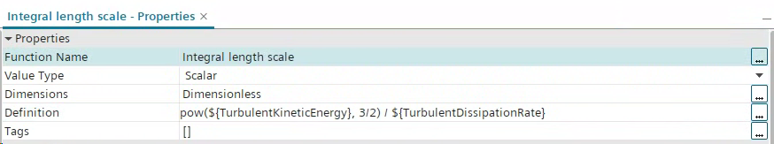
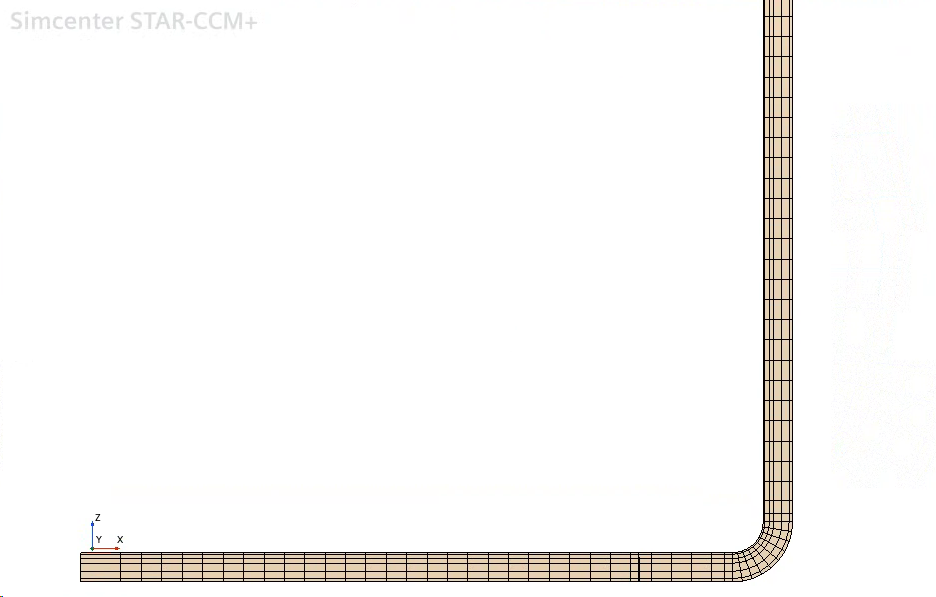
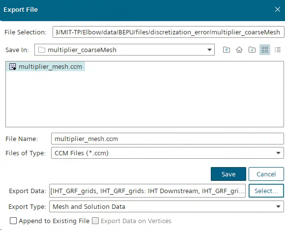
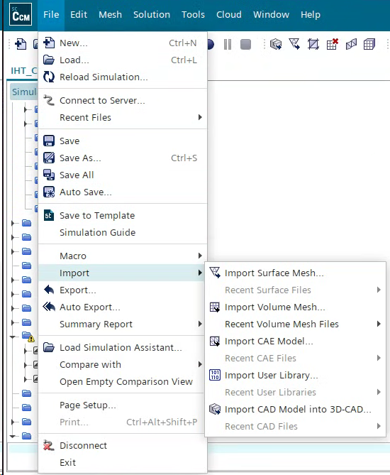
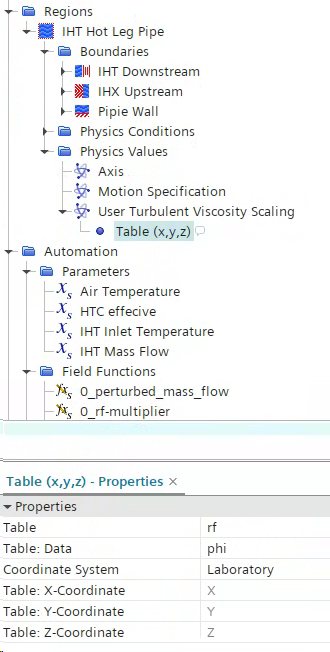

Demo: Elbow
1. Initialize the folder Template
- Copy the
templatesfolder to the main UQ directory, rename it asfiles
files
├── config
│ └── template_uq_config.yaml
├── discretization_error
│ ├── h1
│ ├── h2
│ ├── h3
│ ├── h4
│ └── template_least_square_config.yaml
├── input_error
│ └── template_input_error_config.yaml
├── java
│ └── template_java.java
├── model_error
├── sim
│ └── rf.csv
└── slurm
├── engaging.slurm
└── template_job_submission_script.slurm
2. Sim file
- Put the baseline in the
files/sim - Implement the turbulence integral length scale as a field function.
- $L_0 = \tau_m \sqrt{k_m}$
- $\tau_m$: modeled turbulence time scale
- $k_m$: modeled turbulence kinetic energy
- $L_0 = \tau_m \sqrt{k_m}$
- Model implementation:
- $k-\epsilon$ model : $L_0 = k_m^{3/2}/\epsilon_m$
- $k-\omega$ model (and SST): $L_0 = \sqrt{k_m}/(C_\mu \omega_m)$, $C_\mu=0.09$
- For k-epsilon model:

Grid convergence Study
- Perform mesh convergence study, and save the results to the
files/discretization_error
files/discretization_error
├── h1
│ └── IHT_rke_RANS_12p5mm@03000.sim
├── h2
│ └── IHT_rke_RANS_25mm@03000.sim
├── h3
│ └── IHT_rke_RANS_50mm@03000.sim
└── h4
│ └── IHT_rke_RANS_75mm@03000.sim
│ └── multiplier_mesh.ccm
└── template_least_square_config.yaml
Define GRF grids and extract $L_0$
- Create another sim file with coarse mesh, named
- Turn off wall prism layer
- Increase base size
- Reduce number of layers

- Export the grf mesh as ccm file

Extract $L_0$
-
Import the ccm file as volume mesh, it will crate a new region, rename it as
GRF_mesh

-
Create another sim file with coarse mesh, named
- Turn off wall prism layer
- Increase base size
- Reduce number of layers
Data mapper
- Create a data mapper:
Tools > Data Mapper (right click) > New Data Mapper >Volume Data Mapper- Source Volume: the original region (IHT Hot Leg Pipe in this case)
- Scalar Functions: choose Integral length scale
- Target Volume: the GRF_mesh
- Source / Target Stencil: Cell*
- Right click, choose
Map Data- It creates a field function called MappedIntegral length scale
- Create an XYZ internal table to extract data:
- Scalars: MappedIntegral length scale
- Parts: GRF_mesh
- Export the table and save
- Note! It must be SI unit!
The resulting file structure
files/discretization_error
├── h1
│ ├── extract_L0.java
│ ├── IHT_rke_RANS_12p5mm@03000.sim
│ ├── ils.csv
│ └── multiplier_mesh.ccm
├── h2
│ ├── IHT_rke_RANS_25mm@03000.sim
│ ├── ils.csv
│ └── multiplier_mesh.ccm
├── h3
│ ├── IHT_rke_RANS_50mm@03000.sim
│ ├── ils.csv
│ └── multiplier_mesh.ccm
├── h4
│ ├── IHT_rke_RANS_75mm@03000.sim
│ ├── ils.csv
│ └── multiplier_mesh.ccm
└── template_least_square_config.yaml
Numerical error estimation
paths:
root: '/mnt/research_3TB/MIT-TP/Elbow-Demo_v2/files/discretization_error/'
ls:
field_name: 'MappedIntegral length scale'
save_to: '/mnt/research_3TB/MIT-TP/Elbow-Demo_v2/files/discretization_error/ls'
grids:
grid_1:
name: 'grid1'
dir: '/mnt/research_3TB/MIT-TP/Elbow-Demo_v2/files/discretization_error/h1'
N: 7206400
V: 16.911
field_file_name: 'ils.csv'
grid_2:
name: 'grid2'
dir: '/mnt/research_3TB/MIT-TP/Elbow-Demo_v2/files/discretization_error/h2'
N: 1320000
V: 16.911
field_file_name: 'ils.csv'
grid_3:
name: 'grid3'
dir: '/mnt/research_3TB/MIT-TP/Elbow-Demo_v2/files/discretization_error/h3'
N: 267200
V: 16.911
field_file_name: 'ils.csv'
grid_4:
name: 'grid4'
dir: '/mnt/research_3TB/MIT-TP/Elbow-Demo_v2/files/discretization_error/h4'
N: 149700
V: 16.911
field_file_name: 'ils.csv'
points:
start: 0
end: 3679
Input error latin-hypercube sampling (LHS)
path:
save_to: '/mnt/research_3TB/MIT-TP/Elbow-Demo_v2/files/input_error/lhs_samples.csv'
input_error:
IHT_MASSFLOW:
mean: 1
std: 0.02
model_error:
N_modes: 20
Prepare java
// Simcenter STAR-CCM+ macro: elbow_input.java
// Written by Simcenter STAR-CCM+ 19.04.009
package macro;
import java.util.*;
import star.common.*;
import star.base.neo.*;
import star.turbulence.*;
public class my_java extends StarMacro {
public void execute() {
change_IC();
turn_on_viscosity_perturbation();
run();
collect_data();
}
private void change_IC() {
Simulation simulation_0 =
getActiveSimulation();
/* ==================================================
Customize: perturb through field functions
=================================================*/
UserFieldFunction userFieldFunction_0 =
((UserFieldFunction) simulation_0.getFieldFunctionManager().getFunction("0_perturbed_mass_flow"));
userFieldFunction_0.setDefinition("${IHT Mass Flow} * IHT_MASSFLOW");
}
private void turn_on_viscosity_perturbation() {
Simulation simulation_0 =
getActiveSimulation();
// Turn on the user eddy viscosity scaling
Region region_0 =
simulation_0.getRegionManager().getRegion("IHT Hot Leg Pipe"); // Change to your region name
TurbulentViscosityUserScalingProfile turbulentViscosityUserScalingProfile_0 =
region_0.getValues().get(TurbulentViscosityUserScalingProfile.class);
//Set the user scaling method as xyz table
turbulentViscosityUserScalingProfile_0.setMethod(XyzTabularScalarProfileMethod.class);
// Set table "rf.csv"
FileTable fileTable_1 =
((FileTable) simulation_0.getTableManager().getTable("rf"));
turbulentViscosityUserScalingProfile_0.getMethod(XyzTabularScalarProfileMethod.class).setTable(fileTable_1);
// Use the value "phi"
turbulentViscosityUserScalingProfile_0.getMethod(XyzTabularScalarProfileMethod.class).setData("phi");
// Reload the rf.csv
FileTable fileTable_0 =
((FileTable) simulation_0.getTableManager().getTable("rf"));
fileTable_0.extract();
}
private void run() {
Simulation simulation_0 =
getActiveSimulation();
// Set Stopping Criteria
StepStoppingCriterion stepStoppingCriterion_0 =
((StepStoppingCriterion) simulation_0.getSolverStoppingCriterionManager().getSolverStoppingCriterion("Maximum Steps"));
IntegerValue integerValue_0 =
stepStoppingCriterion_0.getMaximumNumberStepsObject();
integerValue_0.getQuantity().setValue(MAXITER);
// Clean solution history
Solution solution_0 =
simulation_0.getSolution();
solution_0.clearSolution(Solution.Clear.History);
// Run
simulation_0.getSimulationIterator().run();
}
private void collect_data() {
Simulation simulation_0 =
getActiveSimulation();
XYPlot xYPlot_0 =
((XYPlot) simulation_0.getPlotManager().getPlot("Horizontal Temperature Stratification"));
xYPlot_0.export("T_h.csv", ",");
XYPlot xYPlot_1 =
((XYPlot) simulation_0.getPlotManager().getPlot("Horizontal Velocity"));
xYPlot_1.export("V_h.csv", ",");
XYPlot xYPlot_2 =
((XYPlot) simulation_0.getPlotManager().getPlot("Vertical Velocity"));
xYPlot_2.export("V_v.csv", ",");
MonitorPlot monitorPlot_0 =
((MonitorPlot) simulation_0.getPlotManager().getPlot("Wall Heat Loss Plot"));
monitorPlot_0.export("q.csv", ",");
}
}
Copy sim and prepare model_error
- Select the baseline sim file, say
files/discretization_error/h2/IHT_rke_RANS_25mm@0300.sim- Put it in
files/sim
- Put it in
- Model_error:
- Put the ils file of the baseline sim
files/discretization_error/h2/ils.csvto thefiles/model_errordirectory
- Put the ils file of the baseline sim
implement the $\mu_t$ perturbation
- The perturbation of $\mu_t$ is achieved by Turbulent Viscosity User Scaling model
- We will generate
rf.csvfiles as (x,y,z table )to perturb $\mu_t$

- So now we create a dummy csv as a place holder:
- In the
files/simfolder, there is an emptyrf.csv - Read the
rf.csvas a table, which is a place-holder
- In the
-
Initial setting;
- Set the
Regions > Physics values > User Turbulent Viscosity Scalingusing constant = 1 (no perturbation) - When doing UQ, we will use java to ask it to read
rf.csv
- Set the
-
Behind the scene:
- When running simulation, the java (see above) turn on the User Turbulent Viscosity Scaling and reload
rf.csv
Slurm
This is for my local machine
#!/bin/bash
# 1. Execute python
source ~/anaconda3/etc/profile.d/conda.sh
conda activate
python grf.py
# 2. Execute STARCCM+
# Specify the STARCCM path
starccm19="/opt/Siemens/19.04.009-R8/STAR-CCM+19.04.009-R8/star/bin/starccm+"
rm -f DONE
rm -f ABORT
sim_file="SIM_FILE_NAME" # same as baseline sim specified by uq_config.yaml. will be replaced by job_manager
n_prcs=N_CORES # specified in uq_config.yaml. will be replaced by job_manager
# Search for the java file in the same folder
java_file=$(find . -maxdepth 1 -type f -name "*.java" -printf "%T@ %p\n" | sort -nr | head -n 1 | cut -d' ' -f2-)
if [ -z "$java_file" ]; then
echo "ERROR: No .java file found in current directory."
touch ABORT
exit 1
fi
echo "Using newest Java macro: $java_file"
$starccm19 $sim_file -batch $java_file -np $n_prcs | tee -a log
touch DONE
This is for the HPC
#!/bin/bash
module load anaconda3/2022.10
env
cpus="$SLURM_CPUS_ON_NODE"
nodelistcompact="$SLURM_JOB_NODELIST"
nodelistfull=`scontrol show hostnames $nodelistcompact`
nodes=`echo $nodelistfull | sed 's/$/ /g' | sed 's/ /:32,/g'`
n_prcs=`echo $nodelistfull | sed 's/$/ /g' | sed 's/ /:'"$cpus,"'/g'`
host=`echo $nodelistfull | sed 's/$/ /g'`
echo --------
echo $n_prcs
echo -------
echo --------
echo $nodelistfull
echo -------
hostname="$HOSTNAME"
# 1 . Execute python
python grf.py
# 2. Execute Star
sim_file="SIM_FILE_NAME"
# Search for the java file in the same folder
java_file=$(find . -maxdepth 1 -type f -name "*.java" -printf "%T@ %p\n" | sort -nr | head -n 1 | cut -d' ' -f2-)
if [ -z "$java_file" ]; then
echo "ERROR: No .java file found in current directory."
touch ABORT
exit 1
fi
echo "Using newest Java macro: $java_file"
# version="/home/yjouwang/18.02.008-R8/STAR-CCM+18.02.008-R8"
version="/home/rbrew/STAR-CCM+/19.04.009-R8/STAR-CCM+19.04.009-R8"
rm -f DONE
rm -f ABORT
${version}/star/bin/starccm+ $sim_file -printpids -batch -rsh ssh $java_file -on $n_prcs | tee -a log
touch DONE
Note: since the local machine and remote HPC takes different argument.
Create your class for the driver/src/job_manager.py:
class JobManager:
""" A class to manage the job submission.
The class should be inherited and the run method should be implemented.
Subclasss should implement prepare_files and run methods.
"""
def __init__(self):
pass
def prepare_files(self):
raise NotImplementedError
def run(self):
raise NotImplementedError
Two example classes are in the same file.
Once your job manager is defined, use it in driver/driver.py:
# !! Import your job manager
from src.job_manager import YourJobManager
...
if __name__ == "__main__":
if len(sys.argv) != 2:
print("Usage: python driver_uq.py path/to/config.yaml")
sys.exit(1)
CONFIG_PATH = sys.argv[1]
config = read_config_from_yaml(CONFIG_PATH)
SAMPLE_LIST = parse_sample_list(config['rf']['sample_list'])
path_config = {
'root':config['path']['root'],
'base_sim_filepath':config['path']['base_sim_filepath'],
'bepu_input_path':config['path']['bepu_input_path'],
'ils_filepath':config['path']['ils_filepath']
}
...
# !! Use your job manager
job_manager = YourJobManager(
slurm_filepath = config['job']['slurm_filepath'],
partition=config['job']['partition'],
time_for_nodes=config['job']['time_for_nodes'],
n_nodes=config['job']['n_nodes'],
n_cores=config['job']['n_cores'],
interactive_mode = config['job']['interactive_mode'],
rerun = config['job']['rerun']
)
...
Config
Finally, uq_config.yaml connects everything together
path:
root: '/mnt/research_3TB/MIT-TP/Elbow-Demo_v2/results_UQ_noNumError'
base_sim_filepath: '/mnt/research_3TB/MIT-TP/Elbow-Demo_v2/files/sim/IHT_rke_RANS_25mm_base.sim'
ils_filepath: '/mnt/research_3TB/MIT-TP/Elbow-Demo_v2/files/model_error/ils.csv'
de_folderpath: '/mnt/research_3TB/MIT-TP/Elbow-Demo_v2/files/discretization_error/ls/U_1'
bepu_input_path: '/mnt/research_3TB/MIT-TP/Elbow-Demo_v2/files/input_error/lhs_samples.csv'
job:
slurm_filepath: '/mnt/research_3TB/MIT-TP/Elbow-Demo_v2/files/slurm/my_job_submission_script.slurm'
partition: None # local: None, remote: 'partition_name'
time_for_nodes: None # local: None, remote: 'hh:mm:ss'
n_nodes: None # local: None, remote: number of nodes to request
n_cores: 1 # number of cores
interactive_mode: False
rerun: True
java:
java_filepath: ['/mnt/research_3TB/MIT-TP/Elbow-Demo_v2/files/java/my_java.java']
java_keywords: {
"MAXITER": "5000",
}
rf:
sample_list: range(20)
target_quantity: MappedIntegral length scale
k_l0: 1.22
s_2: 1.24
n_trunc: 20
n_modes: 3569
save_every_rf: False
model_error_on: True
disc_error_on: False
Run
cd driver
python driver_uq.py path/to/config.yaml